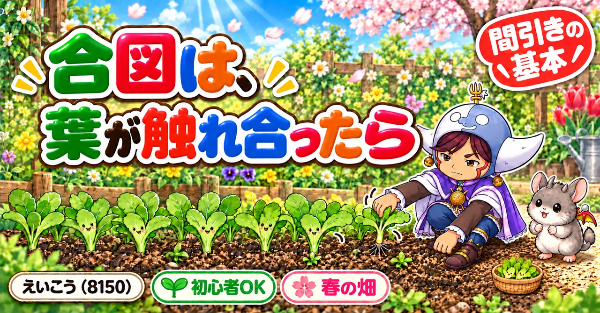
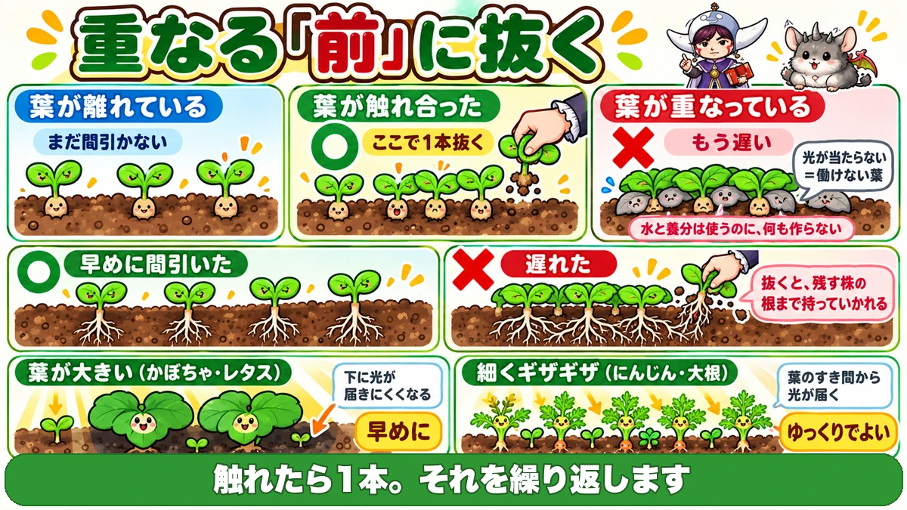
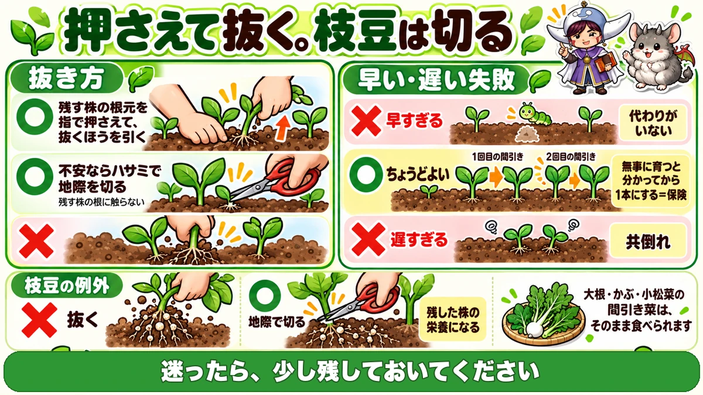

間引きの判断帳｜野菜別の時期・残す苗・抜くか切るかを整理

どうも、8150（えいこう）です🌱 家庭菜園歴8年、理科の教員免許を持っていて、有機・無農薬で野菜を育てています。
📖 この記事の目次
この記事で分かること
- 間引きは、残した苗が育つ場所を確保する作業です。苗の本数だけでなく、葉と株元の混み方を見ます。
- 作業日は『本葉の段階』『隣の葉との重なり』『残す苗の健康』を合わせて判断します。何日目という予定だけでは決めません。
- 大根を太く育てる場合と、葉物を若いうちから食べる場合では、残す株の選び方が変わります。
- 密着した苗や、抜くと隣まで動く苗には、ハサミで株元を切る方法があります。
- 間引き後は、抜いた穴、残した株の傾き、葉の傷を確認します。肥料を足すかどうかは、その作物の栽培計画に戻って判断します。
- 冬の葉物や冬越しする豆類には、すぐに本数を減らさない育て方もあります。季節と収穫の目的をそろえて使います。
芽がそろうとうれしいですよね。そのあとに「では減らしてください」と言われると、なんか気持ちが追いつかない。せっかく出てきたのに、どれを取るんやろ……となります。
そこで、このページでは『何本減らすか』の前に、『何を育てたいか』を整理します。太い大根を収穫したいのか、にんじんを小さめでも数多く食べたいのか、ほうれん草を順番に穫りたいのか。ゴールが違えば、苗の減らし方も違います。
間引きは、小さい苗を見つけて片っ端から抜く競争ではありません。隣との距離を空けながら、育てる苗を選ぶ作業です。大きい株を残す場面もあれば、大きい株を先に収穫して小さい株を育てる場面もあります。この違いが分かると、手が止まりにくくなります。
はじめてなら『早見』で野菜の種類を探し、『手順』で作業の順番を確認してください。すでに間引いたあとなら、『失敗の見分け方』から使えます。みなさんの畑にある苗を見ながら、必要な部分だけ読めば大丈夫です☺️
ここでいう本葉は、発芽後に最初に出る双葉とは別に、そのあと伸びてくる葉です。枚数を数えるときは双葉を足しません。ただし、本葉の数だけが間引きの合図ではないことも、先に覚えておいてください。
早見：間引きの目安（ひと目で分かる数字）
数字を読む前に、単位をそろえる
『株間』は、残す株の根元から隣の株の根元までの距離です。葉の端から測る距離ではありません。『1か所2本』は、種をまいた一つの場所に2株残すという意味。列全体を2本にする話ではないんですね。
すじまきは、種を列に沿ってまく方法です。点まきは、決めた場所へ数粒ずつまく方法。すじまきでは距離を広げ、点まきでは一つの場所の本数を減らす説明が多くなります。この二つを混ぜると、同じ『2』でも意味が変わってしまいます。
- 種まき・植え時：間引き自体に共通の種まき月はありません。作物、品種、地域別の適期を確認してから、その作物の管理として行います。
- うね幅：間引きの材料には、全作物に使える幅の指定はありません。列数、最終株間、通路を先に決めます。
- 元肥：種まき前の準備に含めます。元肥を入れた栽培と、前作の残りを利用する栽培では、間引き時の追肥の扱いが違います。
- 追肥の時期：間引きと同時に行う説明がありますが、必須の組み合わせではありません。作物の生育と、最初に入れた肥料を確認します。
- 収穫までの日数：間引いた日から全野菜を同じ日数で数えることはできません。種まき日と品種の収穫目安を使い、実際の大きさで確認します。
- 連作の間隔：間引きで連作の問題を解消できるわけではありません。植える場所の計画で扱う項目です。ここでは共通の年数を設けません。
大根：複数回で、最後の育て方へ近づける
- 回数：2回とする説明と、3段階で減らす説明があります。まいた粒数、発芽直後の整理を数えるかで違います。
- 開始の目安：本葉3〜4枚で始める例があります。発芽後に密着した苗を整理し、次に本葉2〜3枚で減らす流れもあります。
- 点まきの本数：3本から2本、最後に1本という例。4粒がすべて出た場合に、1本ずつ段階的に減らす例もあります。
- 作業の間隔：本葉3〜4枚から始め、2週間ごとに1本減らす説明があります。この日程を、冬まきや違う種数へそのまま当てはめません。
- 最後の本数：太い根を育てる基本の計画は1か所1本。種を離してまき、家庭用に2本残す方法もありますが、太り方や収穫時期が変わります。
大根の最終株間は、品種の表示で確認してください。『1本にする』と『隣の植え場所まで十分離れている』は別の確認です。一つの穴を整理しても、穴そのものが詰まっていれば、後半は葉が混み合います。
にんじん：太さと本数で最終株間が変わる
- 回数：2〜3回に分ける説明があります。最初の種の密度と、途中で傷んだ苗が出たかを見ます。
- 段階の例：小さい時期に約2cm、次に4〜5cm、最後に約10cmまで広げる方法があります。
- 最終株間：5cm程度、8〜12cm、10cmという説明があります。数を穫るか、太い根を育てるかで選択が変わります。
- 目的別の例：小さめでも多く穫る場合は6〜8cm、大きい根をねらう場合は10〜12cmという使い分けがあります。
- 葉数の例：1回目を本葉3枚ほど、2回目を本葉10枚ほどとする説明があります。別の説明にはより早い段階のものもあり、全方法の共通値にはしません。
- 間引きを省く例：最初から6cm間隔で種をまく方法があります。密にまいてから放置する方法とは違います。
『にんじんは10cm』だけを覚えるより、『太めに育てたいので10cm前後を目標にする』と目的も一緒に残してください。細い根を使う栽培に、大きい根を作る計画を持ち込む必要はありません。
小カブ・トウモロコシ：本数の変化を確認する
- 小カブ：4粒をまいた場所で、発芽後、本葉2〜3枚、本葉4〜5枚という3段階の説明があります。最後に育てる本数と株間は品種の表示も確認します。
- トウモロコシ：3本から2本、2本から1本へ減らす例があります。
- トウモロコシの葉数：本葉3〜4枚で初回、本葉5〜6枚で最後に1本とする説明があります。
- 別のトウモロコシの目安：草丈10cm前後で初回、その約1週間後に次の間引きを行う説明もあります。葉数の計画と機械的に重ねません。
本数の減らし方をメモするなら、『いま3本／今日は2本へ／最終は1本』くらいで十分です。作業する直前に最後の本数だけを思い出すと、初回で全部減らしてしまいやすいので、今日の目標を分けるのがコツです。
枝豆・スナップエンドウ：2本残す計画もある
- 枝豆：1か所3粒から、弱い苗を取り2本残す例があります。本葉が開き、残す苗を比較できる段階で行います。
- スナップエンドウ：1か所3〜4本出た場合に、最終1〜2本へ整理する説明があります。
- 冬越しのスナップエンドウ：最終間引きを2月中旬まで、2月後半まで、暖かくなる3月頃とする説明があります。冬の経過と春の伸び方が条件です。
- 切る方法：豆類で根が近い場合は、残す株を動かさないために株元を切る選択があります。枝豆には抜く実演もあり、『どの条件でも必ず切る』という統一した説明ではありません。
葉物・タマネギ苗・ネギ苗：収穫用と育苗用を分ける
- 冬のほうれん草：小さい段階で強く間引かず、育った株から収穫して、残った株を太らせる方法があります。
- 葉物の考え方：収穫しながら空間を作る方法と、苗の段階で整える方法を分けます。すべての葉物で大きい株を最初から取る、という意味ではありません。
- タマネギ苗：密集した育苗場所を整理し、少なくとも約1cmの株間を取る例があります。これは苗床の数字で、畑へ定植したあとの株間ではありません。
- ネギ苗：種まき約1か月後、苗の長さ6〜7cmで重なった部分を整理する例があります。育苗の最終間隔を約1cmとする説明です。
野菜別の数字は、すべて同じ育て方を比較した結果ではありません。手元の種袋で作物と品種を確認し、そのあとに上の例を見ると、使える数字が選びやすくなります。分からない値を埋めるために、別の野菜の株間を借りてこないようにしましょう。
作業の手順（時期の順）
1．種をまく前に、最後の姿を決める
- 育てる野菜と品種を確認し、太い根、若い葉、小さめの根など、食べたい姿を決めます。
- 種袋の株間と地域別の適期を見て、最終的に使う場所を確保します。
- 点まきなら1か所の種数、すじまきなら列の位置を記録します。
- 途中で減らす方法か、最初から間隔を空けてまく方法かを選びます。
- 間引き菜を食べたい場合も、残す株が混みすぎるまで待つ計画にはしません。
多めにまく方法には、発芽しない種や、途中で傷む苗に対応しやすい面があります。一方、芽が全部出れば整理が必要です。種まきと間引きは、セットで予定しておくとあとがラクになります。
最初から間隔を空ければ作業を減らせる場合もあります。ただ、出なかった場所には空白が残ります。どちらが楽かは、発芽のそろいやすさと、欠けた場所をどう扱うかで変わるんですね。『間引き不要』という言葉だけで選ばず、種まきの条件も見てください。
2．発芽後は、まず列全体を見渡す
- 芽が出た場所と、出ていない場所を確認します。
- 同じ場所の苗同士が密着していないか、株元を見ます。
- 本葉が出始めたか、残す候補の葉が開いているかを確かめます。
- 虫に食べられた苗、葉の欠けた苗、伸びの遅い苗を区別します。
- 今日どこまで減らすかを決めてから、実際の作業へ進みます。
一つの穴に集中すると、隣の穴が空いていることを見落としがちです。すじまきのにんじんなら、両隣に空間のある場所と、ぎゅっと詰まった場所では、整理の仕方を変えられます。最初に列を見渡すだけで、抜きすぎを防ぎやすくなります。
発芽が遅い苗を早く整理する方法はありますが、まだ芽がそろっていない段階と、そろったあとの生育差は分けてください。作物の管理段階を確かめずに「小さいから不要」と判断すると、選択肢を早く失ってしまいます。
3．葉数と混み方を、同時に確かめる
- 双葉を除いて本葉を数えます。
- 隣の葉が触れているか、重なって下の葉を覆っているかを見ます。
- 根元同士が近すぎないか、苗が片側へ寄っていないかを確認します。
- 冬越しの苗なら、寒さで傷んだ株と、春に伸び始めた株を分けて見ます。
- その野菜の段階に合う範囲で、まず混み合った部分から整えます。

図の『触れ合ったら』は、苗を見直す分かりやすい合図です。すべての野菜で、葉が一度触れた瞬間に最終間引きをするという意味ではありません。大根の切れ込みのある葉と、広い葉が重なる苗では、下へ届く光の状態が違います。
逆に、葉数が予定より少なくても、株元が密着している場所は見逃せません。「まだ枚数が足りないから」と待つ間に、根が絡むことがあります。葉数は目安、混み方は現場の情報。どちらか片方で判断しないのが使いやすい方法です。
4．抜く株より先に、残す株を選ぶ
- 葉に傷や病害虫の被害が目立たない苗を探します。
- 葉が開き、株元が細すぎず、同じ場所のほかの苗と比べて育っているものを候補にします。
- 大きさをそろえて育てたい場合は、極端に大きい株だけを選ばず、中程度の株も比較します。
- 家庭用に大きいものから収穫したい場合は、健全な大きめの株を残す計画を選べます。
- 最後に、候補の周囲に育つ場所があるかを確認します。
大きさだけで決めると、葉は大きいけれど傷みのある株を残してしまいます。健康を確認したあとに、大きさと位置を比較してください。『大きいもの勝ち』にしてしまうと、野菜の選考会が雑になります(笑)。
大根には、極端に太い苗を間引く説明もあります。ただ、葉の大きさだけで、地下の根が分かれていると断定することはできません。材料にも、大きい株を疑って抜いたら健全だった例があります。見えている葉の様子と、見えていない根の形を混ぜないことが大切です。
同じくらい健全な苗が並んでいて迷う場合は、周囲の空き方を見ます。隣の苗と近すぎる方を整理すれば、残す苗に場所を渡せます。形をそろえることより、これから葉と根が広がれる配置を優先して考えましょう。
5．手で抜く場合は、隣の土を動かさない
- 残す苗の根元周辺に指を置き、土をそっと押さえます。
- 取り除く苗の葉先ではなく、株元に近い部分を持ちます。
- 勢いをつけず、ゆっくり引き上げます。
- 残す苗まで動く、土がまとまって持ち上がるなどの様子があれば、無理に引き続けません。
- 抜けたあと、残す苗の傾きと根元の穴を確認します。
引っ張る作業の目標は、抜く苗をきれいに回収することより、育てる苗を動かさないことです。葉がちぎれてしまうほど強く握る必要はありません。抵抗が大きい場所は、切る方法へ替えてください。
にんじんの列でも、余裕のある場所では手で抜き、密集した場所では切るという使い分けができます。同じうねだから全部同じ方法、と決めなくて大丈夫です。場所ごとに根元の近さが違いますからね。
6．密着している場合は、株元を切る
- 残す苗と切る苗を先に確認します。
- 刃先を入れる場所に、残す苗の葉や茎がないか見ます。
- 取り除く苗の株元を、地際で切ります。
- 切った地上部を、残す葉に引っ掛けないように取り除きます。
- 作業後、残す苗が切れていないか、土が動いていないか見直します。

切る方法は、根を引き上げる力が隣に伝わるのを避けるための選択です。豆類だけの道具ではありません。大根やにんじんの密着した株、トウモロコシ、細いネギ苗にも使う説明があります。
図には枝豆を切る説明がありますが、材料には手で抜く例もあります。このページでは、枝豆も『残す根を動かしそうなら切る』を選び方の中心に置きます。根粒を残す話だけで、切った根から隣へ養分が確実に届くと考える必要はありません。
小さい苗は、葉を持ち上げると株元が見やすくなります。見えないまま刃を入れず、切る一本を確かめてから進めてください。手早く終えるより、残す苗を一本ずつ守る方が、あとで戻る作業を減らせます。
7．初回と最終回の役割を分ける
- 初回は、密着した苗や傷んだ苗を整理し、次の生育を見られる本数にします。
- 次の確認までに、残った苗の葉の開き方と被害を見ます。
- 二回目以降は、作物ごとの最終本数や株間に近づけます。
- 欠けた場所があれば、周囲の健全な株と空間を見て配置を調整します。
- 最終間引き後も、葉やつるが混み始めていないか見ます。
複数回に分ける方法は、弱った苗が出たときに選び直せる余地を残します。ただし、余分な株を残すことと、密着を放置することは違います。根元が絡み始めた部分だけ切り、ほかの場所は次の段階まで残すなど、必要な整理は行います。
にんじんの間隔を整えるときは、定規どおりの位置に弱い株を残す必要はありません。予定の距離は基準にしながら、健全な株がある位置で少し調整します。等間隔の見た目を完成させるより、育つ株を残す方が目的に合っています。
8．抜いた穴を整え、残した苗を支える
- 抜いた場所に深い穴が残っていないか確かめます。
- 周囲の土を軽く戻し、残す株の根元を安定させます。
- 傾いた苗は、根を引っ張って立て直さず、周囲の土で支えます。
- 土を寄せるときは、新しい葉が出る中心まで埋めません。
- 追肥を予定している場合は、元肥と作物の管理方法を確認してから行います。
土寄せは、株元へ土を寄せる作業です。間引いた穴をそのままにせず、苗が倒れにくい状態へ戻す役割があります。せっかく根を守って抜いたのに、最後に土を強く押して株をぐらぐら動かすと、仕上げで負担をかけてしまいます。ここもやさしくでOKです。
中耕は、株の周りの表面を軽くほぐす作業。間引きと組み合わせる説明もありますが、密着した根元を深く掘り返すことではありません。作業をまとめる場合でも、残す根がある場所を避けます。
間引いたら必ず追肥、という決まりにはしません。元肥を入れて育てた方法と、元肥なしで始める方法では必要な管理が違います。葉がよく伸びている場所に、作業をしたからという理由だけで足す前に、栽培計画へ戻ってください。
9．葉物は、苗の整理から収穫へ切り替える
- 初期は、混み合った部分と傷んだ苗を整理します。
- 食べられる大きさになった健全な株を探します。
- 冬のほうれん草などで順次収穫する方法を選ぶなら、大きい株から穫ります。
- 穫った場所の隣にある小さな株を残し、次の伸び方を見ます。
- 春に生育が進んだときは、冬と同じ混み具合を許し続けず、収穫のペースを見直します。
この方法では、小さい株は『出来が悪いから取る株』ではなく、『次に食べるために育てる株』になります。根菜の苗選びと同じつもりで小さい株から全部取ると、順番に収穫する計画が変わってしまいます。
一度にたくさん穫らず、食べる分を選んで空間を作れるのが家庭菜園の使いやすいところです。ただ、まだ食べられる大きさでない苗を、冬の収穫方法のつもりで取る必要はありません。苗の整理と収穫の段階を分けてください。
10．間引き菜は、収穫物として分けておく
- 食べる野菜の間引き菜と、病害虫の被害が目立つ株を分けます。
- 大根なら味噌汁やおひたし、にんじんの葉ならかき揚げなど、使いたい料理を決めます。
- 土が付いた根元と葉を確認し、調理前に洗います。
- 食べる用途が確認できない苗まで、間引き菜という名前だけで食材にしません。
- 食べる量を増やしたくても、残す株の間引きを遅らせません。
にんじんの葉は、好き嫌いが分かれます。おいしいという説明も、香りが好みに合わないという説明もあります。『せっかく育てたから全部好きにならなあかん』ではないので、初めてなら少し使ってみるくらいで十分です。
間引き菜が食卓へ回ると、苗を減らす作業も収穫の一部になります。でも、料理に使いたいから根が絡むまで待つのは順番が逆です。主役は、これから育てる株。そのタイミングで取れたものを楽しむ、と考えると無理がありません。
失敗の見分け方（症状→原因→やること）
葉が重なり、下の葉が見えにくい
- 症状：上から見ると葉が一面につながり、どの株の葉か分かりにくい。下側の葉に光が届きにくい状態です。
- 考えられる原因：苗の本数が多い、前回の株間が狭い、生育が進んで葉が広がったことなど。
- やること：根元まで見て株を区別し、その作物の段階に合う間引きか収穫で空間を作ります。
葉が一枚触れただけの状態と、何枚も重なって下の葉を覆う状態は分けます。すでに密集しているなら、あと何日待つかを考えるより、今日はどの株を残すかを確認しましょう。
一度に葉を減らしすぎる必要はありません。点まきなら穴ごとの本数、すじまきなら混み合った場所を見て進めます。見た目をすっきりさせるためだけに、健康な株まで取り続けないようにしてください。
苗はたくさんあるのに、根が太らない
- 症状：葉はあるものの、大根やにんじんが期待した太さへ進まない。
- 考えられる原因：密植による競合、まだ収穫段階に達していない、細い根を作る栽培になっているなど。
- やること：種まき日、品種の収穫目安、実際の株間を順に確認します。混み合っていれば、目指す太さに合う間隔へ整理します。
根が細いことだけで、肥料不足とは決められません。たくさんの株が同じ場所を使う状態をそのままにして、肥料だけ増やすと、株間の問題は残ります。先に『根を大きくしたい計画だったか』を確認してください。
細いにんじんを数多く穫る目的なら、小ささは失敗とは限りません。反対に、太い根を予定していたなら、本数を残す育て方と目標が合っていない可能性があります。収穫の評価は、自分で決めたゴールと比べます。
一本を抜くと、隣の苗も動く
- 症状：抜こうとした株の横が傾く、土が塊で持ち上がる、ほかの株まで浮く。
- 考えられる原因：根が絡んでいる、株元が密着している、残す苗の周囲を押さえられていないこと。
- やること：引き抜く力を止めます。切る方法へ替え、すでに浮いた苗は根元の土を整えます。
強く引けば最後には抜けますが、抜けたことが成功ではありません。隣まで持ち上げてしまうなら、その場所は切る方を選ぶ場面です。手で抜くことにこだわらなくて大丈夫です。
残す苗の土が動いたあとに、根をつかんで元の位置へ押し込むのは避けます。周りの土を戻し、株が安定するよう支えてください。葉がしおれないか、その後の状態も見ます。
間引いたあと、苗が倒れた
- 症状：作業前は立っていた苗が傾き、株元に穴や隙間が見える。
- 考えられる原因：抜いた穴が残っている、隣の根を引く力で土が動いた、支えになる土が減ったこと。
- やること：空いた部分へ土を軽く戻し、根元を安定させます。葉の中心まで土をかぶせないようにします。
傾いた茎を何度も手で動かして直すより、土の支えを整える方から始めます。土を寄せたあとに、苗の根元がぐらぐらしていないか確認してください。
倒れのすべてが間引きのせいとは限りません。作業前から細く伸びていた苗や、風で傾いた苗もあります。『作業前の状態』『作業中に動いたか』『抜いた穴の位置』を見れば、対処する場所が絞れます。
残した一本が傷み、その場所が空いてしまった
- 症状：最初に一本へ絞ったあと、虫や寒さで残った苗が傷み、育てる株がなくなった。
- 考えられる原因：選び直す苗を残さず、早い段階で最終本数にしたこと。残した苗の健康を十分見ていなかったこと。
- やること：周囲の株の状態を調べ、その作物の適期内なら追いまきが可能か確認します。適期を過ぎていれば、残る株を育てる計画へ切り替えます。
すべての空白を埋めるために、ほかの場所から苗を抜いて移す必要はありません。特ににんじんは、抜く際に根を傷めると、植え直しても思うような根を収穫できないことがあります。
次の種まきでは、初回と最終回を分ける方法が役立ちます。ただ、今回の残った場所まで本数を多くし続ける対処はしません。欠株への対応と、残った株の密集解消は、別々に考えます。
本数を減らしたのに、つるが絡んでいる
- 症状：スナップエンドウで、株元は見えても上のつる同士が絡み、取り除く株を引くと隣も引かれる。
- 考えられる原因：春の伸び始めから整理が遅れた、すでに複数株のつるが支柱に絡んでいること。
- やること：株元を切る方法を選びます。切った株のつるを一気に引かず、残すつると区別して外します。
地下の根だけでなく、地上のつるも作業の難しさに関わります。『株元を切れたので終了』にせず、取る側のつるが残す側を引っ張っていないか見てください。
冬の間はあまり伸びなくても、暖かくなれば混み方が変わります。冬に残した本数をそのまま春まで固定せず、つるが絡み始める前から見直すと扱いやすいです。
葉物の収穫後に、小さな株ばかり残った
- 症状：大きい株を食べたあと、畑に小さな株が残り、急に寂しく見える。
- 考えられる原因：冬の葉物を順番に収穫する計画どおりに進んでいる場合と、残す株の健康を確認せず穫った場合があります。
- やること：残った株の中心の葉が育っているか確認します。健全なら、空いた場所で育つのを待ちます。傷んだ苗ばかりなら次の収穫候補を見直します。
見た目が小さいだけで、失敗扱いにしなくて大丈夫です。大きい株を穫る育て方では、収穫直後に小さい株が目立つのは自然です。次の葉が伸びているかを見てください。
ここで毎回、最も小さい株まで取ってしまうと、次に育てる株が残りません。食べたい分と、畑に残す候補を分けてから収穫すると、計画が続けやすくなります。
作業後に葉が傷み、元気が落ちた
- 症状：残した葉が裂けている、中心の芽が切れている、作業直後から傾きやしおれが目立つ。
- 考えられる原因：抜いた苗が葉を引っ掛けた、ハサミが残す株に当たった、根元の土が動いたことなど。
- やること：葉の傷と株元の動きを分けて確認し、残っている芽を守ります。追加の間引きや強い土寄せを急いで重ねません。
傷んだ苗を見つけたときは、肥料を足す前に、どこを傷めたかを確認します。中心の芽が切れた状態と、一枚の外葉が裂けた状態では、残っている部分が違います。葉の色だけで処方を決めないようにしましょう。
次の作業では、抜く株の葉を先に分けておきます。切るなら一本ずつ株元を見ます。道具を使うかどうか以上に、『残す株に手や刃が当たらない道筋』を作ることが役立ちます。
説明が分かれていること
葉が重なる前か、重なってからか
- Aという説明：葉が触れ始めたら整理し、下の葉が覆われる前に空間を作ります。
- Bという説明：大根などで、ある程度葉が重なった段階を間引きの目安にします。
- どう考えればよいか：葉の形、種の密度、本葉の段階を合わせて判断します。軽く触れる状態と、下の葉を覆う状態を区別します。
切れ込みのある大根の葉は、広い葉が重なる場合と光の入り方が違います。ただし、葉に隙間があることと、地下の根に余裕があることは同じではありません。上が透けて見えても、株元の密着は確認してください。
『重なったらもう遅い』と全作物を決めつける必要はありません。反対に、重なってからでよいという説明を理由に、密集した苗をいつまでも置いておくことも避けます。迷ったら、混み合った場所を先に少し整理し、残る株を見られる状態にしましょう。
大きい株を残すか、中程度の株を残すか
- Aという説明：家庭菜園では、健康で大きい株を残し、大きいものから収穫していきます。
- Bという説明：そろった生育を重視し、中程度の株を残します。極端に大きいものも整理の対象にします。
- どう考えればよいか：健康を先に確認し、そのあとに収穫の目的と大きさを合わせます。大きさだけを万能の選別基準にしません。
出荷のように大きさをそろえたい場合と、家庭で順番に食べたい場合では、扱いやすい株の並びが違います。ただし、材料のにんじんの説明には、出荷目的を明示せず中程度をすすめるものもあります。『中程度を残す話は全部プロ向け』と片づけるのも正確ではありません。
みなさんが迷う場面では、まず傷んだ苗と密着した苗を整理するだけでも判断が進みます。残った健康な候補で大きさを比べ、目的に合う方を選べばOKです。最初から一つの基準で全列を選ぶ必要はありません。
にんじんは5cmか、10cmか
- Aという説明：最終を5cm程度として、小さめの根を多く穫る方向で育てます。
- Bという説明：8〜12cm、または10cm程度へ広げて、太い根を育てます。
- どう考えればよいか：品種、収穫したい太さ、欠株の位置を確認します。異なる目的の数字を平均して、一つの正解を作りません。
同じにんじんでも、細く食べやすい根を狙う計画と、一本を大きくする計画は別です。6〜8cmと10〜12cmを目的で使い分ける説明もあります。株間の数字を見つけたら、その直前に『何を収穫したいのか』があるかを確かめてください。
途中の4〜5cmを、別の育て方の最終株間と取り違えないことも大切です。数字には『初回』『二回目』『最後』の札を付けて残しましょう。間引きの途中経過と完成形が混ざると、次の作業が分からなくなります。
枝豆は抜くのか、切るのか
- Aという説明：根元を切り、残す苗の根や、土中の根粒を動かさないようにします。
- Bという説明：弱い苗を手で抜き、残す株を育てます。
- どう考えればよいか：株元が近く、抜くと隣も動く状況なら切る方法を選びます。根粒を残すことと、隣株への養分供給を保証することは分けます。
切る方法の分かりやすい利点は、抜くときの力を隣の根に伝えにくいことです。この理由だけでも、密着した苗で選ぶ意味があります。『菌を残すと隣の株が必ずよく育つ』まで期待しなくて大丈夫です。
根粒菌の話は、植物と菌の関係を知る入口として面白いテーマです。ただ、間引く株の根に根粒があるか、切ったあとにどれだけ働くかは、その場で確認できるとは限りません。科学の説明と、道具を選ぶ実用上の理由を分けると、無理なく判断できます。
スナップエンドウは2月か、3月か
- Aという説明：2月中旬まで、または2月後半までに最終本数へ整理します。
- Bという説明：冬の間は複数株を残し、3月頃の暖かくなった段階で間引きます。
- どう考えればよいか：冬越しで残った株数、暖冬による伸び、つるの絡みを見ます。月だけを全国共通の日程にしません。
冬に株が傷む可能性へ備える考えと、春の密集を避ける考えは、どちらも同じ株の管理に関わります。冬の備えを理由に春の整理まで先延ばしすると、つるを外す作業が難しくなります。
暖かくなって新しい伸びが見えたら、根元とつるの両方を見直してください。『3月までは触らない』と決めるより、今の株がどの段階なのかを確認する方が、地域差にも対応しやすいです。
間引いたら必ず追肥するのか
- Aという説明：元肥を入れたあと、間引きから定期的に追肥する栽培法です。
- Bという説明：元肥なしで始め、間引き時を最初で最後の施肥にする方法や、生育がよければ追肥しない方法です。
- どう考えればよいか：土の履歴と最初の準備をそろえて比べます。回数だけを取り出し、別の方法の量と組み合わせません。
このページでは、肥料の種類や一律の量を指定していません。間引きは苗の配置を変える作業で、施肥は養分の管理です。同じ日にできることはあっても、片方をしたから片方も必須とはなりません。
間引き後に元気が落ちた場合も、まずは根や葉を動かしていないか確認します。土が浮いた苗に肥料を追加する前に、株元を落ち着かせる方を優先してください。
間引かない方法は、どこまで使えるか
- Aという説明：通常の大きさの根をねらい、成長に合わせて間隔を広げます。
- Bという説明：最初から種を離す、細い根を使う、冬の葉物を収穫しながら減らすなど、強い間引きを省く計画です。
- どう考えればよいか：『作業を省く』だけでなく、種の配置や収穫する姿もセットで選びます。
密にまいた普通のにんじんを放置しても、十分に間隔を空けた場合と同じ太さになる、という話ではありません。大根の2本残しも、種を離してまいた条件を伴います。最初の条件を抜いて結果だけ真似しないようにしましょう。
冬のほうれん草も、ずっと全株を置く計画ではなく、大きくなった株から穫って空間を作る方法です。『間引かない』という言葉の中に、最初から空間を確保する方法と、後から収穫で空ける方法がある。ここを分けるだけで、説明がぐっと読みやすくなります。
よくある質問
初回で一本だけ残してはいけませんか
複数回で減らす方法では、初回に選び直す苗を残します。虫や寒さで残した一本が傷むと、その場所が空いてしまうためです。すでに密着している苗は整理しつつ、今日の本数と最終本数を分けて考えてください。
葉が触れていなくても間引きは必要ですか
株元が密着していれば、葉に隙間があっても整理する場面があります。地下の根の広がりは上から見えません。本葉の段階と株元の近さも確認し、その野菜の育て方に合わせます。
同じくらいの苗が並んでいて選べません
先に葉の傷や細すぎる株元がないかを見ます。健康状態も大きさも同じなら、残したあとの間隔で選んで大丈夫です。一本だけ完璧な苗を探すより、育つ場所がある配置を作りましょう。
大きな葉の大根は、又根ですか
葉の大きさだけでは確定できません。材料には、大きすぎる株を疑ったものの、抜いたら健全だった例もあります。傷や生育差を比較する情報にはなりますが、地下の形の診断として使わないようにします。
ハサミで切った根は掘り出しますか
根を引いて隣を動かさないために切る方法では、切った根をその場で無理に掘り出しません。地上部を取り除き、残した苗を確認します。病気が疑われる株の片づけは、通常の健全な苗の間引きと分けて対応します。
枝豆を抜いてしまったら失敗ですか
抜く実演もあるため、抜いたことだけで失敗とは言えません。残す苗の根元が動いたか、傾いたかを確認してください。次に密着した場所を扱うときは、切る方法を選ぶと隣を動かしにくくなります。
プランターでも同じ考え方ですか
葉の混み方、根元の近さ、苗の健康を見て選ぶ点は共通です。容器に収まる株数は、作物と最終株間で確認します。畑で2本残す例があることだけを理由に、小さな容器でも同じ本数にするのは避けます。
にんじんは、何cmにすればよいですか
最終5cm程度から8〜12cmまで、目的の違う説明があります。太い根を育てるのか、小さめでも数を穫るのかを先に決め、品種の表示と合わせます。途中の株間と最終株間も分けてください。
間引いたにんじんを植え直せますか
植え直す話はありますが、抜く際に根が傷み、期待どおりの根を収穫できないという留保があります。空白を確実に埋める方法としては扱いません。残す株の根を守り、必要なら適期内の追いまきを検討します。
間引き菜が大きくなるまで待ってもよいですか
料理に使いやすい大きさを待つ間に、残す株の根が絡む場合があります。残す株の管理を先に決め、その時期に取れた間引き菜を使ってください。食べるために作業を遅らせるより、収穫の小さなおまけと考えると気楽です。
葉物は、いつも大きい株から抜くのですか
冬のほうれん草などを順次収穫する方法では、大きい株から食べます。苗の段階では、傷んだ株や密集部分を整理する作業も必要です。初期の苗選びと、食べられる段階の収穫を同じルールにしません。
冬は間引きを全部休んでもよいですか
寒い時期に予備の株を残す方法はありますが、全作物の作業を止める意味ではありません。冬まき大根には最終間引きを遅らせない説明もあります。作物、残った株数、春までの生育計画を確認します。
間引きさえすれば病害虫を防げますか
混み合いを減らして風通しを確保する助けにはなりますが、それだけで被害がなくなるわけではありません。葉の裏や中心を確認する作業は続けます。被害のある苗を、間隔を空けただけで健康になったと判断しないことも大切です。
忙しくて間引きが遅れました。もう諦めるしかありませんか
まず株元を見て、残す候補を選びます。密着していれば無理に引かず切り、抜いた穴を整えてください。今から整理しても、遅れがなかった場合と同じ収穫を保証できるわけではありませんが、残る株を育てる作業は進められます。
作業の記録は、何を書けばよいですか
野菜と品種、種まき日、今日残した本数か株間を記録します。『隣の葉が重なっていた』『根が動きそうなので切った』など、判断した理由を一言添えると便利です。次の確認日に、前回から何が変わったかを比べられます。
学ぶ：間引きと根粒菌のしくみ🔬
まとめ
小さめのハサミ
枝豆やとうもろこしは、抜くと隣の根まで動きます。地際で切れば、残す株に触らずに済みます。刃先が細いものだと、混み合った中でも狙った株だけ切れます。
![[商品価格に関しましては、リンクが作成された時点と現時点で情報が変更されている場合がございます。]](https://hbb.afl.rakuten.co.jp/hgb/56d22030.def85fa7.56d22031.b89fde86/?me_id=1250472&item_id=10022339&pc=https%3A%2F%2Fthumbnail.image.rakuten.co.jp%2F%400_mall%2Fplantz%2Fcabinet%2F01%2Ft-13.jpg%3F_ex%3D240x240&s=240x240&t=picttext "[商品価格に関しましては、リンクが作成された時点と現時点で情報が変更されている場合がございます。]")

小かぶのタネ
間引きの練習にいちばん向いています。9月にまけば1か月ちょっとで穫れて、間引き菜もそのまま食べられます。
![[商品価格に関しましては、リンクが作成された時点と現時点で情報が変更されている場合がございます。]](https://hbb.afl.rakuten.co.jp/hgb/56e76943.db126f41.56e76944.bd847f20/?me_id=1270580&item_id=10012182&pc=https%3A%2F%2Fthumbnail.image.rakuten.co.jp%2F%400_mall%2Ftekutekushop%2Fcabinet%2Fseed%2Fhn130050.jpg%3F_ex%3D240x240&s=240x240&t=picttext "[商品価格に関しましては、リンクが作成された時点と現時点で情報が変更されている場合がございます。]")
小松菜のタネ
こちらも間引きながら穫れる野菜です。葉物は大きい株から先に穫るので、記事の後半の話がそのまま試せます。
![[商品価格に関しましては、リンクが作成された時点と現時点で情報が変更されている場合がございます。]](https://hbb.afl.rakuten.co.jp/hgb/56e76943.db126f41.56e76944.bd847f20/?me_id=1270580&item_id=10012154&pc=https%3A%2F%2Fthumbnail.image.rakuten.co.jp%2F%400_mall%2Ftekutekushop%2Fcabinet%2Fseed%2Fhn063.jpg%3F_ex%3D240x240&s=240x240&t=picttext "[商品価格に関しましては、リンクが作成された時点と現時点で情報が変更されている場合がございます。]")